5. 3D Scanning and printing
This week I worked on Design and 3D print an object. Also in 3D scan object. At FabLab Puebla, they explained to us how we should set up our documents for printing and the precautions we should take to avoid errors in the piece, from the minimum thickness, temperature, angles, as well as getting to know the printers we have and the different support modes that can be used to achieve incredible projects.
Research
3D printing is an additive manufacturing technology that allows for the creation of three-dimensional objects layer by layer from a digital model. Unlike laser cutting on MDF, which relies on material subtraction, 3D printing adds material in a controlled manner, offering several advantages for prototyping or manufacturing parts that are difficult to achieve with other methods.
3D printing enables the creation of complex shapes and intricate geometries that would not be possible with laser cutting on MDF, which is limited by the flat geometry of the material. With 3D printing, it's possible to manufacture customized parts quickly and cost-effectively, which is ideal for prototyping or unique products tailored to specific customer needs. With 3D printing, it's possible to manufacture customized parts quickly and cost-effectively, which is ideal for prototyping or unique products tailored to specific customer needs.
The limitations of 3D printing include surface quality, which may be less smooth than other manufacturing methods; dimensional accuracy, affected by material shrinkage and printer calibration; material limitations; and slow printing speeds, especially for large or intricate objects. Additionally, the initial and ongoing costs of materials, along with the need for support structures during printing, can impact its feasibility. Size and resolution limitations may also affect the ability to accurately produce large or finely detailed objects.
How I disigned and 3D printed my object
First of all, I thought of something that I would like to make and that would be articulated to truly challenge me. I ended up choosing a cat consisting of three assembled pieces (head, belly, and tail) that you can download in the files. I realized that the best way to create something articulated was to put a type of ring on one end of a piece and a post on the other end, so that when it was printed, it would remain like that forever.
For the printing part of the cat, I downloaded the Ultimaker Cura application with the aim of obtaining the G-Code for the ENDER 3 S1 PRO printer. It's important to note that the files should be viewed in the .STL format. Afterwards, within the program, you can decide on the width and scale at which you want to print. As you can see, the cat design took 3 hours and 16 minutes to print.
The parameters I used for my 3D printing were to add tree supports to all parts so that they could be properly supported and the filament wouldn't try to lay in mid-air and cause warping. For the thickness of the walls, I specified 0.8 mm to ensure they weren't too thin and would still have walls if someone wanted to sand them. I used PLA material, so I set the temperature at 200°C and the speed at 80 mm/s to allow for some detailing without taking too long.
 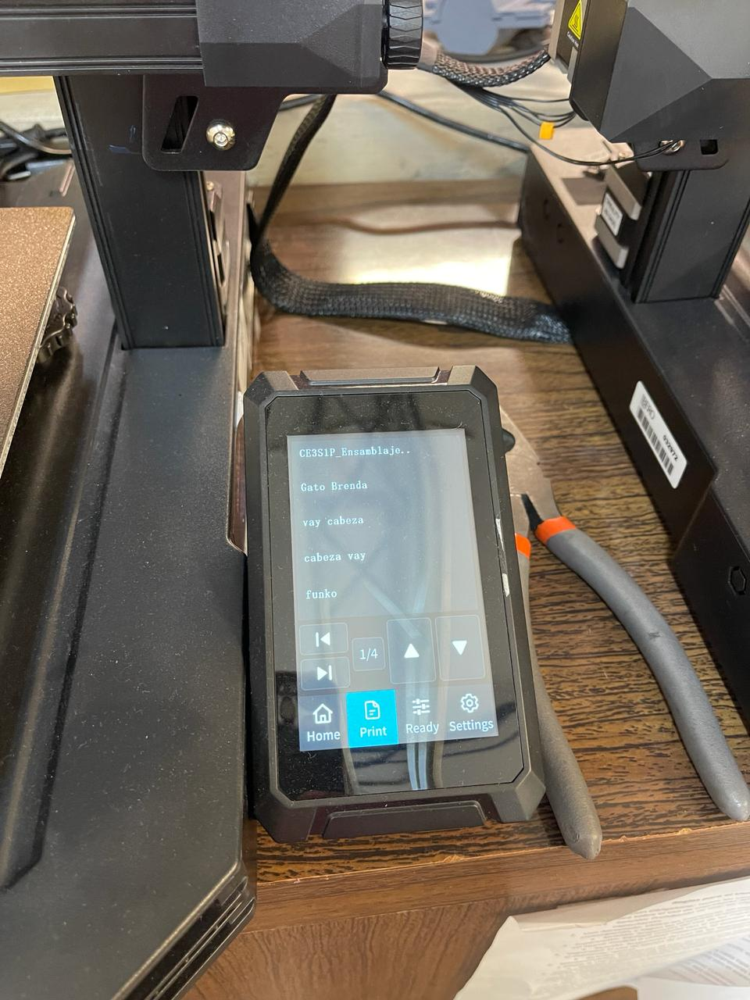
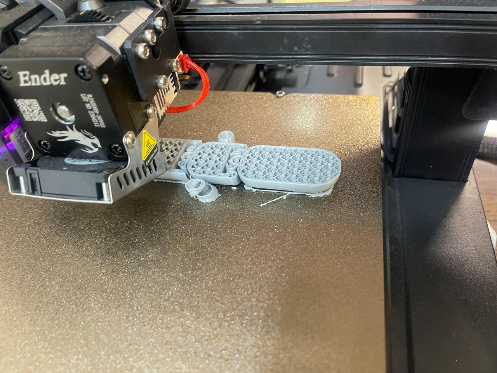
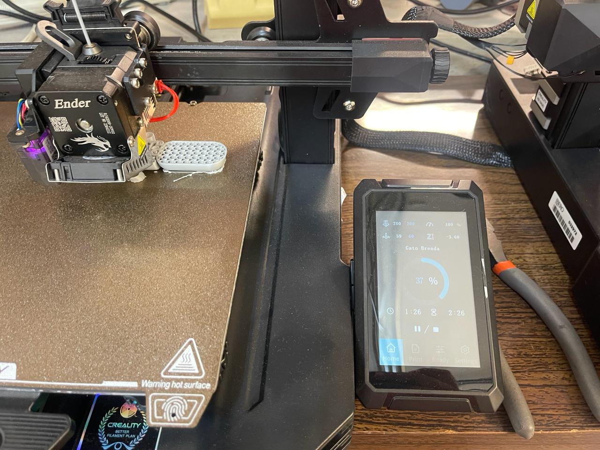
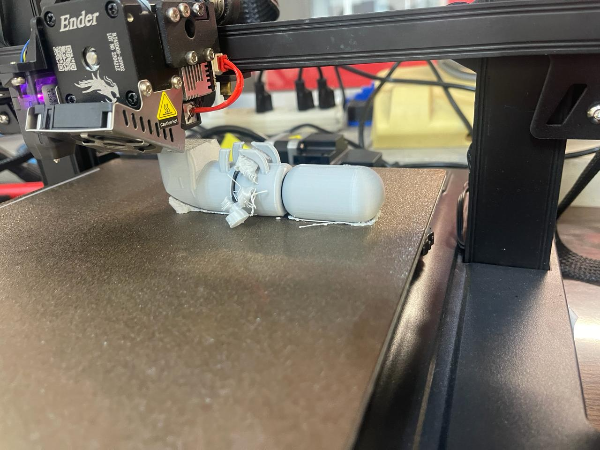
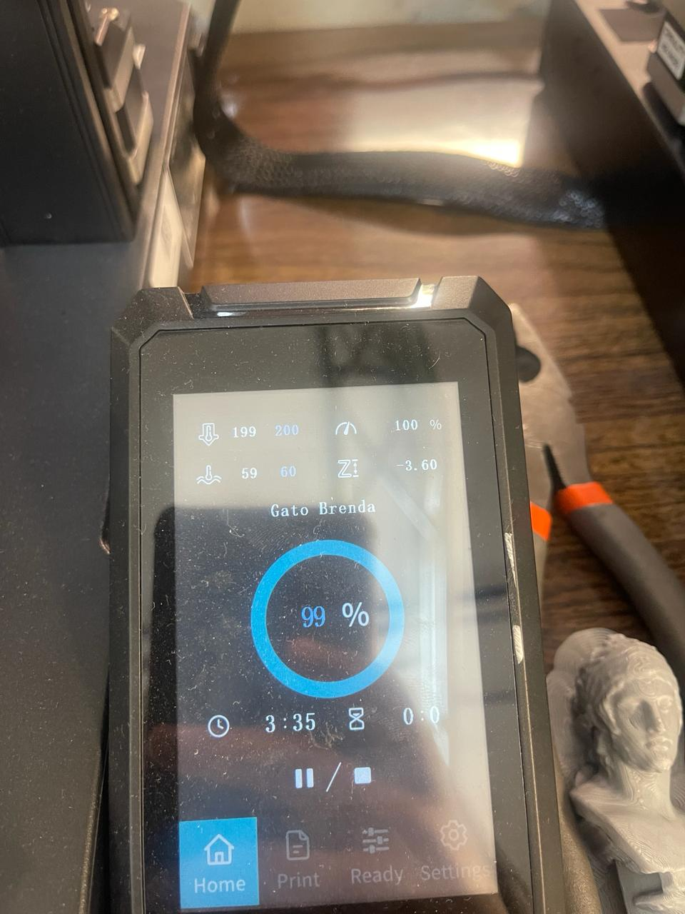
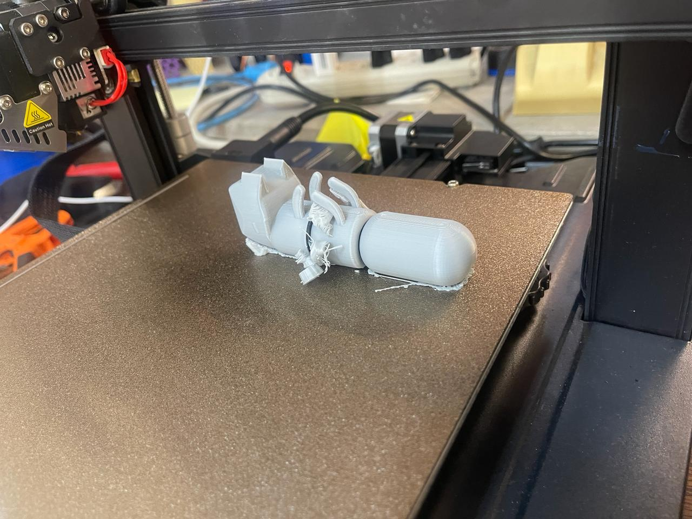
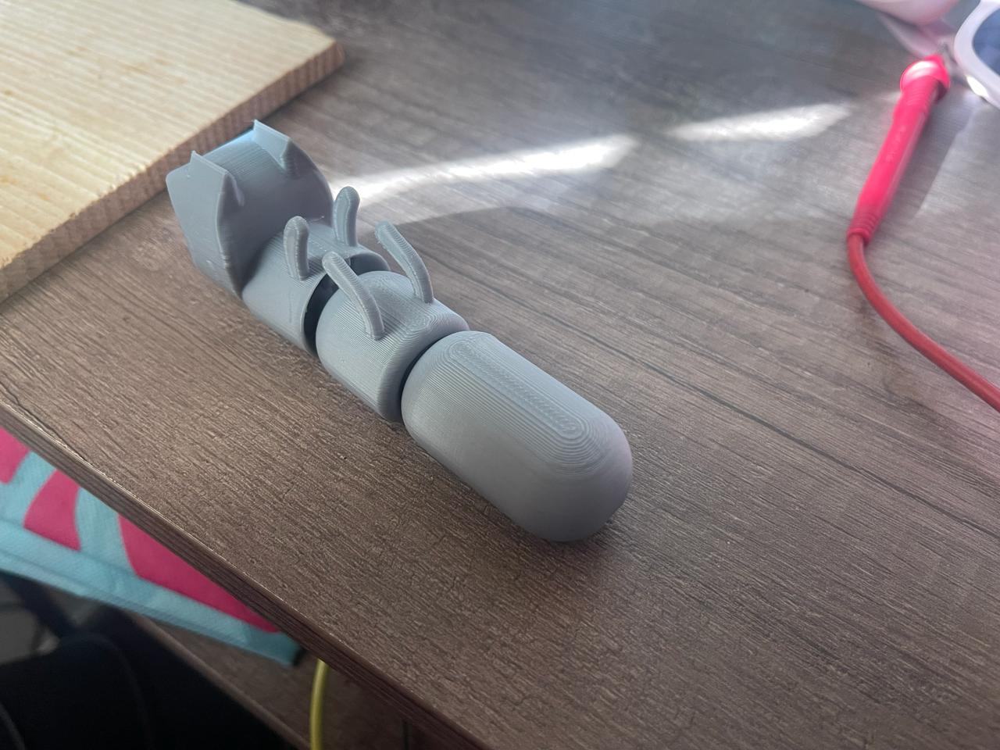
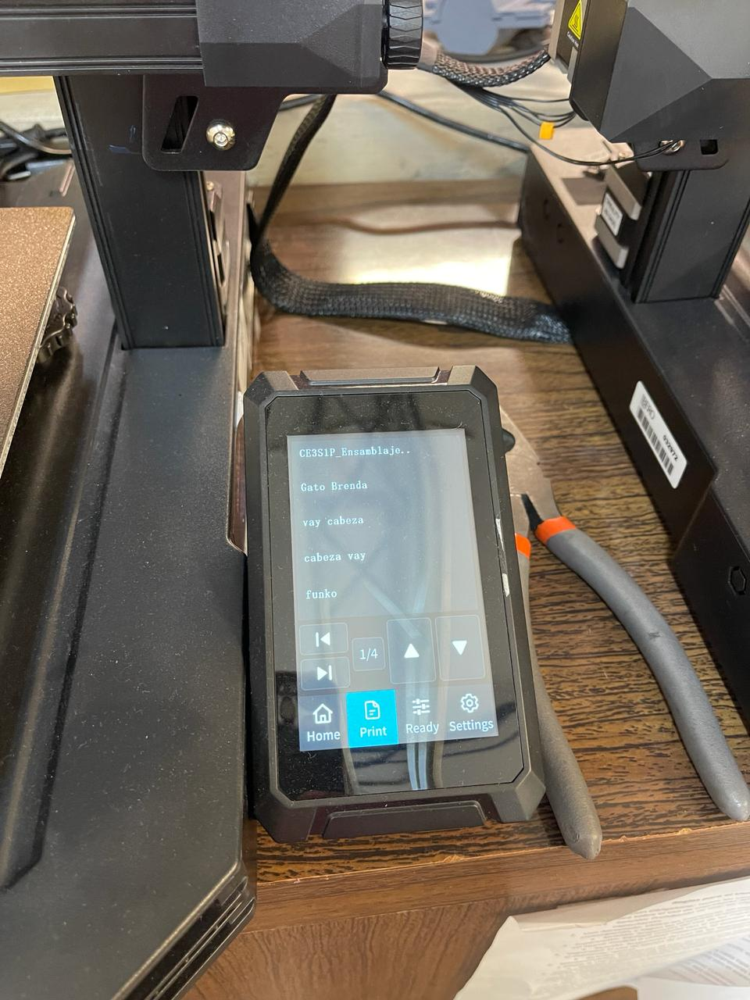
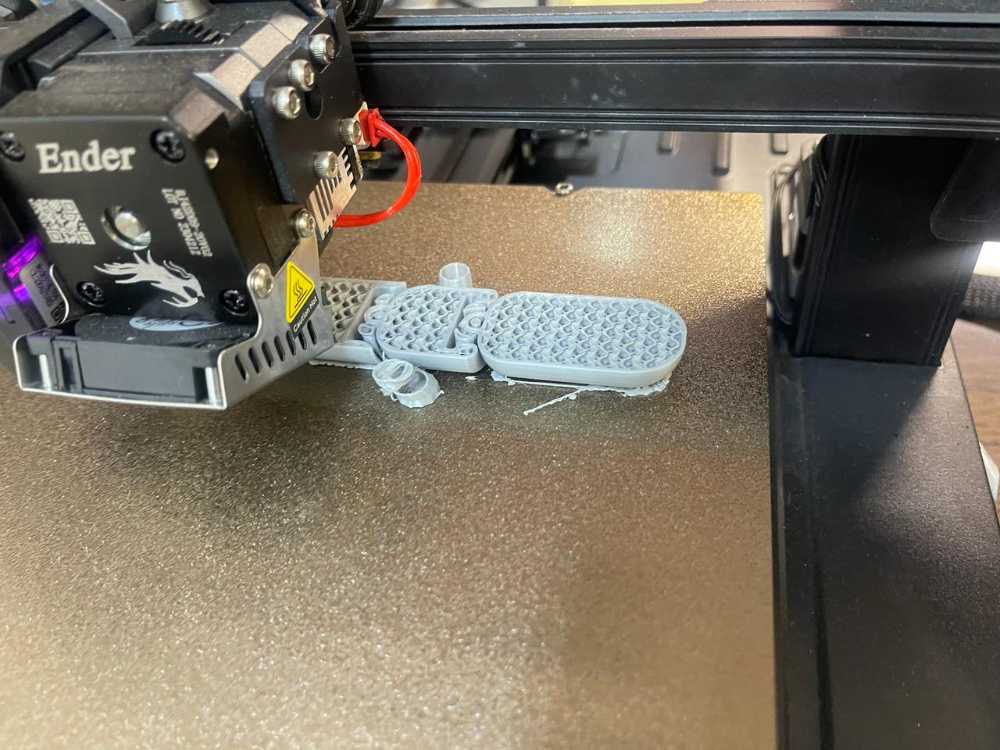
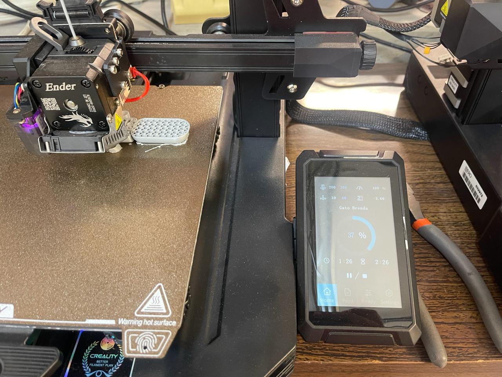
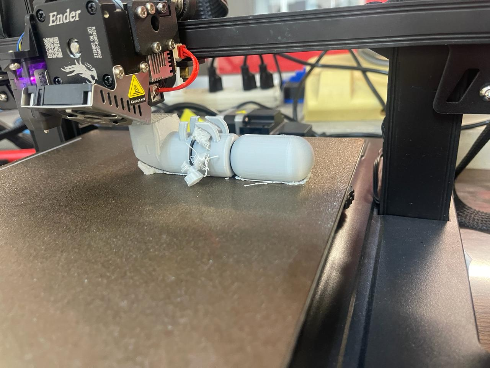
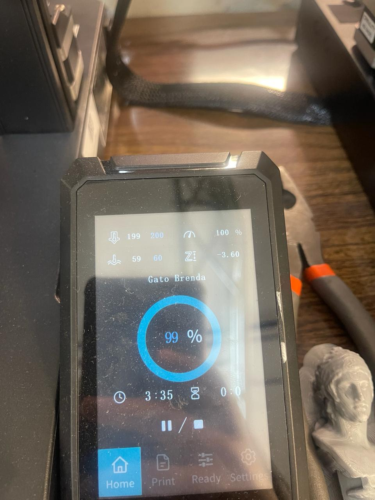
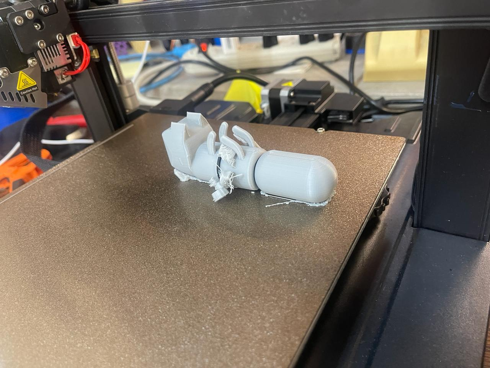
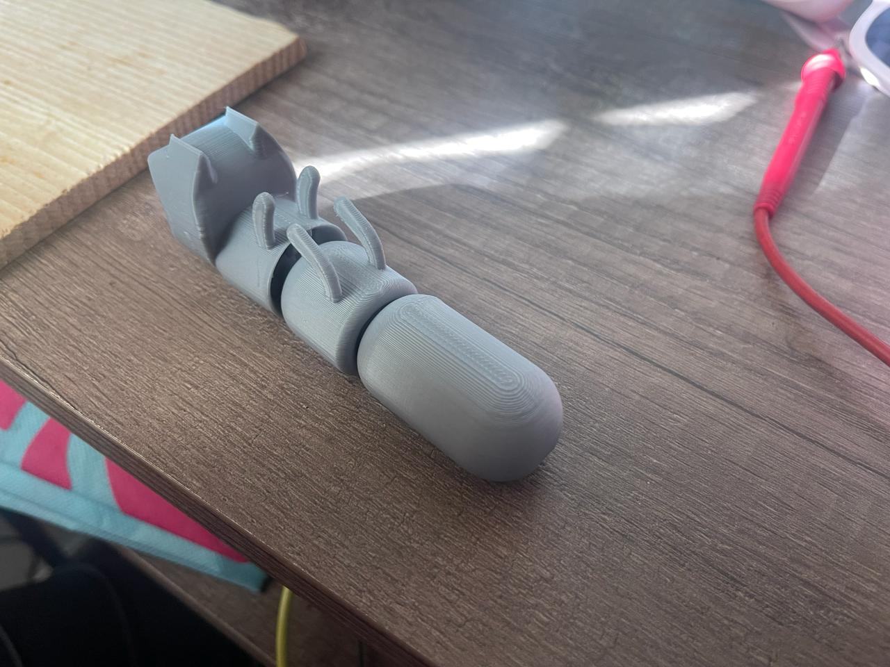
How I scanned and printed an object
For the 3D scanning part, I used the LiDAR scanner sensor available on my iPhone 12 Pro Max. It's worth noting that despite doing a good job, the phone overheated significantly, and although the process took a maximum of 15 minutes, it consumed a little over 20% of the battery. The application I used was AR Code.
The AR Code application utilizes a technique known as augmented reality (AR) based 3D scanning. The scanning process typically involves the following steps:
- Object Preparation: Firstly, the object to be scanned is placed in a suitable environment for data capture. It's important that the object is well-lit and there isn't too much clutter in the surrounding environment to achieve optimal results.
- Launching the Application: The AR Code application is launched on the mobile device or platform where it's installed. Then, the 3D scanning function is selected.
- Data Capture: The user points the device's camera towards the object they want to scan. The application utilizes the camera to capture images of the object from various angles and perspectives.
- Image Processing: The captured images are processed using computer vision algorithms and augmented reality techniques. These algorithms identify the contours and features of the object to create a three-dimensional model
- Generating the 3D Model: Based on the information gathered during data capture, the application generates a three-dimensional model of the scanned object. This model can be visualized and manipulated on the device.
- Refinement and Adjustment: Depending on the accuracy of the scan and the quality of the generated model, additional refinement and adjustment may be required to enhance the fidelity of the 3D model.
Limitations of 3D scanning with the AR Code application may include:
- Accuracy: The scanning accuracy can vary depending on the quality of the device's camera, the lighting of the environment, and the complexity of the object being scanned. Objects with reflective or transparent surfaces may pose additional challenges for accurate scanning.
- Processing Time: The process of data capture and 3D model generation can be time-consuming, especially for large or detailed objects. Additionally, the performance of the mobile device can influence the processing speed.
- Compatibility: The application may have limitations in terms of the types of objects it can scan and the devices it can operate on. Some advanced scanning features may require specific hardware or updated versions of the operating system.
- Hardware Requirements: 3D scanning may require significant hardware and processing capabilities on the device, which may limit its availability on older or less powerful devices.
For printing the scanned motorcycle file, I used the other printer available at FabLab Puebla: SINDOH 3DWOX 1. Interestingly, at one point when I decided not to monitor the printer, it decided to stop, and I had to repeat the printing process.

Files
Note: The G-Code files will not be uploaded due to their size.
- Head.SLDPRT
- Belly.SLDPRT
- Tail.SLDPRT
- Cat assembly.3mf
- Cat assembly.SLDASM
- Moto.stl
Cat
Motorcycle